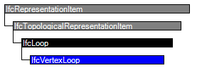

Natural language names
 | Vertexschleife - Topologie |
 | Vertex Loop |
 | Boucle de points |
| Vertexschleife - Topologie |
| Vertex Loop |
| Boucle de points |
NOTE Definition according to ISO/CD 10303-42:1992
A vertex_loop is a loop of zero genus consisting of a single vertex. A vertex can exist independently of a vertex loop. The topological data shall satisfy the following constraint:
NOTE Entity adapted from vertex_loop defined in ISO 10303-42.
HISTORY New entity in IFC2x2.
Informal Propositions:
| # | Attribute | Type | Cardinality | Description | C |
|---|---|---|---|---|---|
| 1 | LoopVertex | IfcVertex | [1:1] | The vertex which defines the entire loop. | X |

| # | Attribute | Type | Cardinality | Description | C |
|---|---|---|---|---|---|
| IfcRepresentationItem | |||||
| LayerAssignment | IfcPresentationLayerAssignment @AssignedItems | S[0:1] | Assignment of the representation item to a single or multiple layer(s). The LayerAssignments can override a LayerAssignments of the IfcRepresentation it is used within the list of Items. | X | |
| StyledByItem | IfcStyledItem @Item | S[0:1] | Reference to the IfcStyledItem that provides presentation information to the representation, e.g. a curve style, including colour and thickness to a geometric curve. | X | |
| IfcTopologicalRepresentationItem | |||||
| IfcLoop | |||||
| IfcVertexLoop | |||||
| 1 | LoopVertex | IfcVertex | [1:1] | The vertex which defines the entire loop. | X |
<xs:element name="IfcVertexLoop" type="ifc:IfcVertexLoop" substitutionGroup="ifc:IfcLoop" nillable="true"/>
<xs:complexType name="IfcVertexLoop">
<xs:complexContent>
<xs:extension base="ifc:IfcLoop">
<xs:sequence>
<xs:element name="LoopVertex" type="ifc:IfcVertex" nillable="true"/>
</xs:sequence>
</xs:extension>
</xs:complexContent>
</xs:complexType>
 EXPRESS-G diagram
EXPRESS-G diagram Link to this page
Link to this page